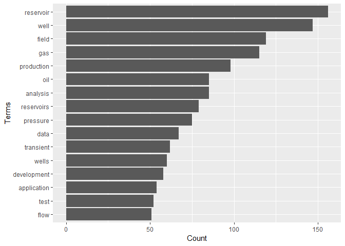
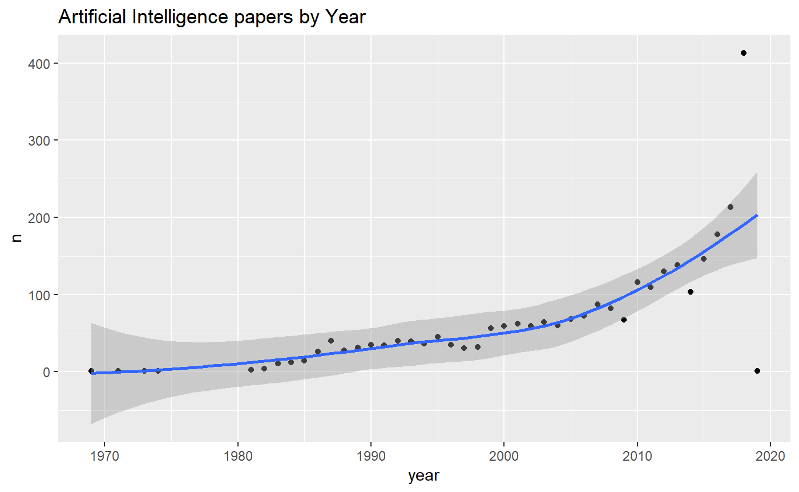
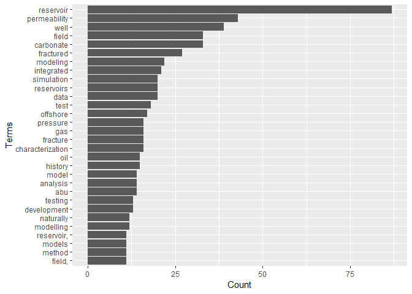

The goal of petro.One is providing a reproducible platform for acquiring and analyzing metadata while searching papers on oil and gas in the OnePetro website.
Motivation
The standard way of searching for papers in OnePetro is using a web browser to enter the search terms for a particular paper we are looking for. The result will come in web pages with which could be dozens, hundreds or thousand of paper titles. We will need to browse all the resulting pages to find papers that have a better match with the subject we are researching.
By using some statistical tools available through R, the search could turn in highly profitable in terms of time, matching quality and selection of the papers.
The search keywords are entered thorugh the R console and the papers will return in a shape of a dataframe, which is identical to a spreadsheet: rows of paper titles and columns with details from the metadata extracted from the web page.
With the dataframe already in our computers we could perform a thorough search and narrow down to the most ideal papers.
Installation
You can install petro.One from github with:
# install.packages("devtools") # install *devtools* first
# install from the *master* release branch
devtools::install_github("f0nzie/petro.One")# install from the *develop* branch
devtools::install_github("f0nzie/petro.One", ref = "develop")or from CRAN with:
install.packages("petro.One")What is behind the paper search
A typical OnePetro search URL would look like this:
https://www.onepetro.org/search?q=neural+network&peer_reviewed=&published_between=&from_year=&to_year=
which could be explained like this:
domain: https://www.onepetro.org/command: search?q=: parameter that holds the query words. In the example above, it would be q=neural+network. As it is shown, it means search any word.peer_reviewed=: parameter switch to get papers than have been only peer reviewed. When it has the value on means that is activated.published_between=: parameter switch that activates when from_year and to_year have numeric entries.from_year=: parameter to enter the starting year of the searchto_year=: parameter to enter the end year of the search.
There are additional parameters such as:
start=: parameter to indicate the starting page if the resulting search has several pages. rows=: parameter to indicate the number of rows (papers) to display per page. In the web browser, the options are 10, 50 and 100. Off-browser it could be a number up to 1000.sort=: parameter related to the selector Sort By with options Relevance, Most recent and Highest rated.dc_type: parameter that indicates what type of document the paper is. These are the type of documents:
chapter
conference-paper
general
journal-paper
presentation
media
other
standardThere are few additional parameters but they will not be used as often as the ones already described.
They key is build a search URL that is recognizable by OnePetro. To do that I wrote a function make_search_url that does just that. Instead of entering the search keywords, how will they be searched, year and type of paper, we enter them from the R console.
Below some examples:
Get the number of papers for the keyword neural network.
The option how = "any" means to search for papers that contain the word neural or the word network.
Let’s take a look at the difference in returning results with any and all for the same keywords neural network.
Here we make of of two functions of petro.One: make_search_url and get_papers_count.
library(petro.One)
# search any word like "neural" or "network"
url_any <- make_search_url(query = "neural network", how = "any")
url_any
#> [1] "https://www.onepetro.org/search?q=neural+network&peer_reviewed=&published_between=&from_year=&to_year="
get_papers_count(url_any)
#> [1] 3403
# search for papers that have "neural" and "network" at the same time
url_all <- make_search_url(query = "neural network", how = "all")
url_all
#> [1] "https://www.onepetro.org/search?q=\"neural+network\"&peer_reviewed=&published_between=&from_year=&to_year="
get_papers_count(url_all)
#> [1] 3114Read papers from from_year to to_year
We can send a query where we specify the starting year and the end year. Use the parameters as in the example below.
In this example the option how = "all" means to search papers that contain exactly the words neural network as a difference to any which means search for any occurrence of the words. Of course, using any rather than all will yield many more results.
We use two petro.One functions: make_search_url to build the OnePetro search URL and onepetro_page_to_dataframe to put the papers in a table.
library(petro.One)
# neural network papers from 1990 to 2000. Exact phrase
my_url <- make_search_url(query = "neural network",
from_year = 1990,
to_year = 1999,
how = "all")
df <- onepetro_page_to_dataframe(my_url)
df
#> # A tibble: 10 x 6
#> title_data
#> <chr>
#> 1 Deconvolution Using Neural Networks
#> 2 Neural Network Stacking Velocity Picking
#> 3 Drill-Bit Diagnosis With Neural Networks
#> 4 Seismic Principal Components Analysis Using Neural Networks
#> 5 First Break Picking Using Neural Networks
#> 6 Neural Networks And Paper Seismic Interpretation
#> 7 Neural Networks In the Petroleum Industry
#> 8 Artificial Intelligence I Neural Networks In Geophysics
#> 9 Inversion of Seismic Waveforms Using Neural Networks
#> 10 Conductive fracture identification using neural networks
#> # ... with 5 more variables: paper_id <chr>, source <chr>, type <chr>,
#> # year <int>, author1_data <chr>And these are the terms that repeat more freqently:
term_frequency(df)
#> # A tibble: 26 x 2
#> word freq
#> <chr> <int>
#> 1 neural 10
#> 2 networks 9
#> 3 seismic 3
#> 4 picking 2
#> 5 analysis 1
#> 6 artificial 1
#> 7 break 1
#> 8 components 1
#> 9 conductive 1
#> 10 deconvolution 1
#> # ... with 16 more rowsGet papers by document type (dc_type)
We can also get paper by the type of document. In OnePetro it is called dc_type.
Conference papers (conference-paper)
In this example we are requesting only conference-paper type.
Here we add to make_search_url the parameter dc_type.
Note also that we are adding another parameter rows to get 1000 rows instead of 10, 50 or 100 as the browser allows.
# specify document type = "conference-paper", rows = 1000
my_url <- make_search_url(query = "neural network",
how = "all",
dc_type = "conference-paper",
rows = 1000)
get_papers_count(my_url)
#> [1] 2773
df <- onepetro_page_to_dataframe(my_url)
df
#> # A tibble: 1,000 x 6
#> title_data
#> <chr>
#> 1 Deconvolution Using Neural Networks
#> 2 Neural Networks And AVO
#> 3 Neural Network Stacking Velocity Picking
#> 4 Predicting Wax Formation Using Artificial Neural Network
#> 5 Dynamic Neural Network Calibration of Quartz Transducers
#> 6 Seismic Principal Components Analysis Using Neural Networks
#> 7 First Break Picking Using Neural Networks
#> 8 Artificial Neural Networks in Drilling Troubles Prediction
#> 9 Estimation of Welding Distortion Using Neural Network
#> 10 Minimum-variance Deconvolution Using Artificial Neural Networks
#> # ... with 990 more rows, and 5 more variables: paper_id <chr>,
#> # source <chr>, type <chr>, year <int>, author1_data <chr>
Journal papers (journal-paper)
In this other example we are requesting for journal-paper type of papers. We are also specifying to get the maximum number of rows that OnePetro permits: 1000.
# specify document type = "journal-paper", rows = 1000
my_url <- make_search_url(query = "neural network",
how = "all",
dc_type = "journal-paper",
rows = 1000)
get_papers_count(my_url)
#> [1] 307
df <- onepetro_page_to_dataframe(my_url)
df
#> # A tibble: 307 x 6
#> title_data
#> <chr>
#> 1 Drill-Bit Diagnosis With Neural Networks
#> 2 Implicit Approximation of Neural Network and Applications
#> 3 Artificial Neural Networks Identify Restimulation Candidates
#> 4 Application of Artificial Neural Networks to Downhole Fluid Analysis
#> 5 Application of Artificial Neural Network to Pump Card Diagnosis
#> 6 Neural Network Approach Predicts U.S. Natural Gas Production
#> 7 Pseudodensity Log Generation by Use of Artificial Neural Networks
#> 8 An Artificial Neural Network Based Relative Permeability Predictor
#> 9 Neural Networks for Predictive Control of Drilling Dynamics
#> 10 Characterize Submarine Channel Reservoirs: A Neural- Network-Based Approach
#> # ... with 297 more rows, and 5 more variables: paper_id <chr>,
#> # source <chr>, type <chr>, year <int>, author1_data <chr>Finding the most freqent terms in well test
For this example we want to know about conference papers where the words well and test are found together in the papers.
library(petro.One)
my_url <- make_search_url(query = "well test",
dc_type = "conference-paper",
how = "all")
get_papers_count(my_url)
#> [1] 9458
df <- read_multidoc(my_url)
term_frequency(df)
#> # A tibble: 9,877 x 2
#> word freq
#> <chr> <int>
#> 1 reservoir 1821
#> 2 well 1672
#> 3 gas 1449
#> 4 field 1291
#> 5 production 1103
#> 6 analysis 1042
#> 7 pressure 947
#> 8 reservoirs 894
#> 9 wells 882
#> 10 data 826
#> # ... with 9,867 more rows
How do the most frequent terms relate each other
Now, it is not enough for us to know what terms are the more repeating but how those freqent terms relate to each other.
In the following plot you will see that the strength of the relationship between terms is reflected by the thickness of the connection lines.
plot_relationships(df, min.freq = 400, threshold = 0.075)
We can see that wells and well are connected stringly to horizontal, transient, pressure, flow, testing, reservoirs, fracture, and analysis. The rest of the words are frequent but not very much connected.
For instance, if you are looking for papers that have stronger relationship between of well test and permeability, it would wise to add that term to the search.
library(petro.One)
my_url <- make_search_url(query = "well test permeability",
dc_type = "conference-paper",
how = "all")
get_papers_count(my_url)
#> [1] 190
df <- read_multidoc(my_url)
term_frequency(df)
#> # A tibble: 697 x 2
#> word freq
#> <chr> <int>
#> 1 reservoir 86
#> 2 permeability 42
#> 3 well 38
#> 4 field 32
#> 5 carbonate 31
#> 6 fractured 27
#> 7 integrated 21
#> 8 modeling 21
#> 9 simulation 21
#> 10 reservoirs 20
#> # ... with 687 more rows
plot_bars(df, min.freq = 10)
In this example, we can see the effect of refining our search by including the term permeability.
plot_relationships(df, min.freq = 15, threshold = 0.05)
This has the advantage of improving the search and narrow down the papers we are more interested in.
Summaries
The summary functions allow us to group the papers by a preferred group:
- by type of document
- by publisher
- by publication
- by year
This will give you a summary of the count not the papers themselves.
Here is an example of summaries. In this case, we want papers that contain the exact words “well test”.
library(petro.One)
my_url <- make_search_url(query = "well test",
how = "all")papers_by_type(my_url)By document type
| name | value |
|---|---|
| Chapter | 8 |
| Conference paper | 9458 |
| General | 193 |
| Journal paper | 2538 |
| Media | 5 |
| Other | 8 |
| Presentation | 25 |
By publisher
papers_by_publisher(my_url)| name | value |
|---|---|
| American Petroleum Institute | 42 |
| American Rock Mechanics Association | 64 |
| BHR Group | 10 |
| Carbon Management Technology Conference | 1 |
| International Petroleum Technology Conference | 364 |
| International Society for Rock Mechanics | 31 |
| International Society for Rock Mechanics and Rock Engineering | 8 |
| International Society of Offshore and Polar Engineers | 15 |
| NACE International | 45 |
| National Energy Technology Laboratory | 8 |
By publication source
papers_by_publication(my_url)| name | value |
|---|---|
| 10th North American Conference on Multiphase Technology | 1 |
| 10th World Petroleum Congress | 1 |
| 11th ISRM Congress | 1 |
| 11th World Petroleum Congress | 4 |
| 12th ISRM Congress | 1 |
| 12th International Conference on Multiphase Production Technology | 2 |
| 12th World Petroleum Congress | 3 |
| 13th ISRM International Congress of Rock Mechanics | 1 |
| 13th International Conference on Multiphase Production Technology | 1 |
| 13th World Petroleum Congress | 3 |
By year of publication
papers_by_year(my_url)| name | value |
|---|---|
| Since 2017 | 515 |
| Since 2016 | 1081 |
| Since 2015 | 1630 |
| Since 2014 | 2187 |
| Since 2013 | 2698 |
| Since 2012 | 3212 |
| Since 2011 | 3665 |
| Since 2010 | 4192 |
| Since 2009 | 4623 |
| Since 2008 | 5034 |
Search for any word
In this other example, we want papers that containg the word “well” or “test”.
library(petro.One)
my_url <- make_search_url(query = "well test",
how = "any")
by_doctype <- papers_by_type(my_url)by_doctype| name | value |
|---|---|
| Chapter | 60 |
| Conference paper | 87857 |
| General | 932 |
| Journal paper | 15876 |
| Media | 9 |
| Other | 21 |
| Presentation | 265 |
| Standard | 95 |
Total number of papers that contain well or test
In this example we get the total number of papers by document type.
sum(by_doctype$value)
#> [1] 105115Or use the R base function summary to give us a quick statistics of the papers:
# r-base function summary
summary(by_doctype)
#> name value
#> Length:8 Min. : 9.00
#> Class :character 1st Qu.: 50.25
#> Mode :character Median : 180.00
#> Mean :13139.38
#> 3rd Qu.: 4668.00
#> Max. :87857.00